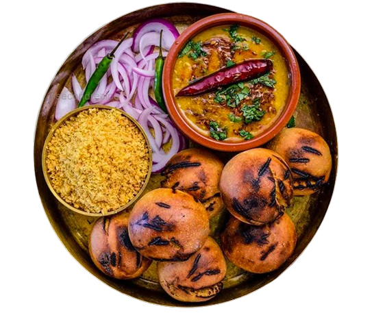
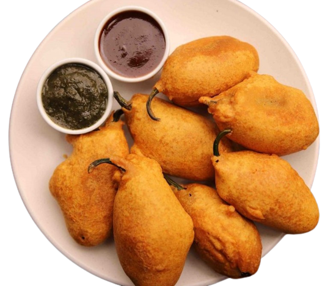
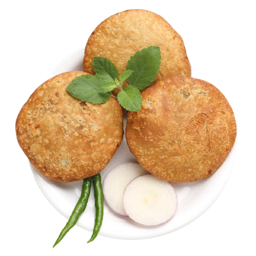
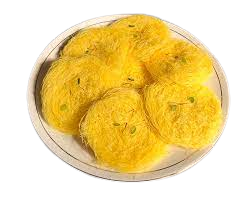
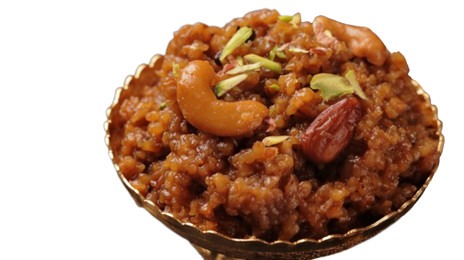
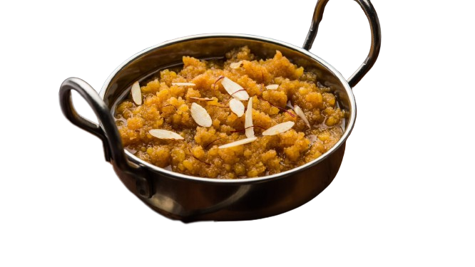
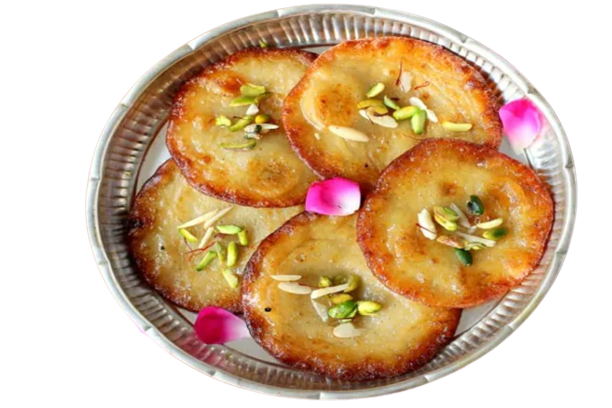
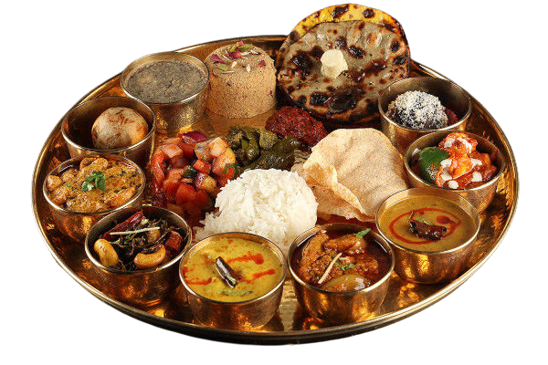
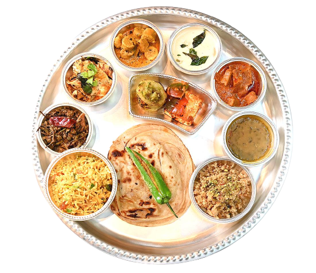
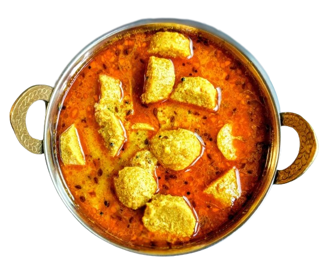

Food feeds the stomach, but comfort feeds the soul. The culinary
philosophy of Firangi has been simple
since 2003. We provide our customers with new-age experimental
cuisine that retains the comfort of our favourite North-Indian food
memories. We aim to offer the highest quality with our aesthetics,
flavour, and experimentation.

Royal Thali
Rajasthan is known as the land of Maharajas which is famous for its
rich culture and cuisine.
Dal Baati Churma
'Dal Baati Churma' is a traditional delicacy from the state of
Rajasthan.

Mirchi Bada
Mirchi bada is a spicy Indian snack consisting of chili and potato
and fried, served hot with tomato sauce and tamarind chutney.

Pyaaj Kachori
'Kanda Kachauri' or 'Pyaaj Kachori' is a kind of Rajasthani Kachori,
a fried pastry filled with a spicy onion filling.

Kesar Feni
Kesar Feni Is A Special Tasteful Wintersweet Made With Important
Pride And Moxie Across Rajasthan. Made From Fine Wheat Flour, Desi
Ghee, And Saffron.

Lapsi
Lapsi a traditional dish Rajasthani dish made with daliya(cracked
wheat),gud(jaggery) and ghee

Moong Dal Ka Halwa
Moong Dal Halwa is an addictive and delicious halwa variant made
with mung lentils, milk, sugar and nuts.

Malpua
Malpua are traditional North Indian pancakes made with wheat
flour,jaggery or sugar and cardamom powder.

Why People Choose Firangi ?

Choose Your Favourite
We provide our customers with new-age experimental cuisine
that retains the comfort of our favourite North-Indian food
memories.
Choose Your Favourite
We provide our customers with new-age experimental cuisine
that retains the comfort of our favourite North-Indian food
memories.

Choose Your Favourite
We provide our customers with new-age experimental cuisine
that retains the comfort of our favourite North-Indian food
memories.
Our Popular Food Item
Our Popular Food Items are Dal Baati Churma , Royal Thali , Mirchi
Bada , kesar Feni , Malpua , Lapsi and Pyaaj Ki Kachori.
Dal Baati Churma
'Dal Baati Churma' is a traditional delicacy from the state of
Rajasthan.
Rs 1100
Mirchi Bada
'Mirchi bada is a spicy Indian snack consisting of chili and
potato and fried, served hot with tomato sauce and tamarind
chutney.
Rs 650
Kesar Feni
Kesar Feni Is A Special Tasteful Wintersweet Made With Important
Pride And Moxie Across Rajasthan. Made From Fine Wheat Flour, Desi
Ghee, And Saffron.
Rs 1600
Malpua
Malpua are traditional North Indian pancakes made with wheat
flour,jaggery or sugar and cardamom powder.